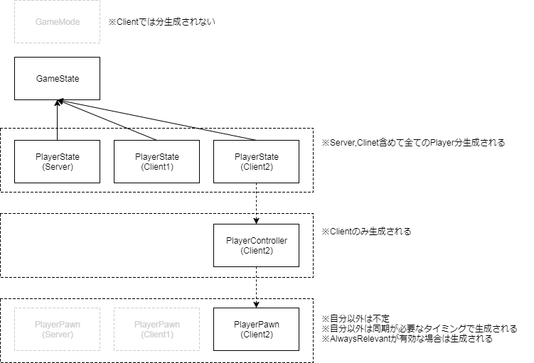

UE4中有对多人游戏模式的支持，本篇会记载一些与之相关的比较繁杂的知识点，一上来还是不可能就对所有的框架就能进行归纳总结的吧。
UE4框架总览
首先是对UE4的框架进行认知，UE4是以什么样的模式来定义多人游戏的。首先是官方文档的描述
即Server/Client的构成，我目前所知的就两种：
- Listen Server
- Dedicated Server
下面的这篇是关于多人游戏设计的文章，总结了很多重要的知识。
下面让我开始真正的UE4多人框架理解之旅。
Overview
首先是一些基础的概念，暂时还不需要对实现进行深究，但至少要知道。
首先是UE4中提供的几种网络模式和服务器类型。当然这些大多数是上面的官方文档的内容，我感觉用中文表达出来更方便我查找和回忆。
Network Modes and Sever Types
要以什么样的方式来开发，单人还是多人。在UE4的运行界面选定自己想要开始运行的网络模式。
| Network Mode | Description |
|---|---|
| Standalone | 就是以Server模式来运行，不接受任何来自别的客户端的连接 |
| Client | 就是以Client模式来运行，不会执行服务器端的任何逻辑代码 |
| Listen Server |
以Server模式来运行，也会接受来自其他客户端的网络连接(connections)而且存在一个本地玩家(Local Player) |
| Dedicated Server |
以Server模式来运行而且也会接受来自其他Client的连接，但是不存在本地玩家。所以这个模式下可以忽略画面，声音，用户输入，或者其他用户相关的特性，以此来提高Server的执行效率。这也是非常多的多人 游戏会采取的网络模式。 |
Actor Replication
Replication是我很早之前就接触到的名词，但是一直都很懵逼，不知道这个是干什么的。
Replication is the process of reproducing game state information between different machines in a network session.
Replication(复制)是网络同步的一个非常非常重要的过程。恰当且正确的设置Replication，可以实现不同机器之间游戏状态的同步。默认情况下，Actor的Replication功能是关闭的，也就是说仅会在本地执行，不会将现在的状态同步到其他机器。可以很方便的通过C++设置bReplicates = true或者在Blueprint中把Replicates设置为true。
关于一些常见的Replication特性，使用Actor的Replication可以做什么事情
| Replication Feature | Description |
|---|---|
| Creation and Destruction |
如果一个具有权威(Authority)版本的并且被标记为Replicate(=true)的Actor于Server生成(Spawn)，它就会自动的生成一个远程代理(remote proxies)用来同步所有与之相连的客户端的数据。如果你销毁了这个Actor，它也会销毁这些代理。 |
| Movement Replication |
如果Authoritative Actor的Replicate Movement 被激活(或者在C++中设置bReplicateMovement)，那么它的Location，Rotation，Velocity都会被同步。 |
| Variable Replication |
Authoritive Actor中的变量如果被标记为Replicated，那么当该变量值被修改的时候，也会通过远程代理将修改同步到其它远程上。 |
| Component Replication |
Actor的Components replicate同于其所属的的Actor，被标记为Replicated的变量同样会被复制，Component中的RPCs调用跟Actor类中的RPCs调用表现一致。 |
| Remote Procedure Calls(RPCs) |
RPCs是一种特殊的函数可以用来与特定的某个远程机器进行通信，不论是从哪一方调用。它可以被指定为Server(only runs on the server), Client(only runs on the Actor’s owning client), NetMulticast(runs on every machine conneted to the session, including the server)。 |
这里举几个反例，几个常见的特性在，Actor，Pawns，Characters中不需要replicate的：
- Skeletal Mesh and Static Mesh Components
- Materials
- Animation Blueprints
- Particle Systems
- Sound Emitters
- Physics Objects
Each of these runs separately on all clients. However, if the variables that drive these visual elements are replicated, it will ensure that all client has the same information and therefore simulates them in approximately the same way.
嘛，翻译过来总感觉不太对劲，大概就是那个意思。
Actor Replication的方式
关于Actor的Replication是一个很大的课题，知道UE4为Replication到底做到了哪一步很重要。官网中说
As mentioned in the networking overview, Actors are the main workhorse for replication. The server will maintain a list of actors, and will update the client periodically so that the client will maintain a close approximation of each actor (that is marked to be replicated).
这一段来自Actor Replication - The various aspects of replicating Actor objects and their components.
大意是说Actor是Replicate的主要的推动者，服务器会维护一个需要Replicate的Actor列表，定期的更新客户端数据，方便客户端维护这些Actor的值。
还有一种说法就是，Replication是以Actor为单位进行状态的复制的，我觉得这很贴切了。
Actor的更新主要通过两种方式：
- Property updates
- RPCs (Remote Procedure Calls)
两者之间的区别在于属性更新当属性的值改变的时候自动Replicate，而RPCs只有在被执行的时候会Replicate。
这里官网中所说，自动进行属性值的更新并不代表完全没有任何代价，在判断属性值是否有被修改这个过程中还是存在着一点CPU的资源占用。取而代之的就是未修改的属性不会占用我们带宽(network bandwidth)。
关于各种Replication的具体使用，在上面的链接中有一些介绍，暂时先等用到的时候再逐一整理了。
Replicates NetLoadOnClient
在设置Actor的Replication的时候会遇到一些标志位，Replicates, NetLoadOnClient等等，它们之间有什么影响进行了验证。当然一开始我也是不知道的，于是问了公司的前辈，没想到前辈虽然不太清楚但是用非常详细的方式帮我验证了，这就是我跟强者之间的差距吗…
废话不多说直接上结论：
就初级功能而言，Replicates和NetLoadOnClient的效果是一样的，在Server中无论哪个被设置为true，Actor都会在各个客户端生成。
但是这也是仅针对初级功能而言：在游戏未运行的时候Server设置好，都会在Client中生成Actor，也就是说当你在UE4的Editor中把两个的任何一个设置为true，或者全部设置为true，都能观察到这个Actor在各个Client中都会被生成(以ListenServer模式运行)。当这两个都设置为false的时候，会发现这个只会在本地存在实例，不会被同步Spawn到其他远程上。
但是NetloadOnClient默认是true的，所以一般情况下没有必要特意的设置为false，除非是特殊情况只想生成本地实例。NetLoadOnClient貌似只是负责游戏最开始Play的时候是否要进行Actor的Creation Replication，还有最后游戏结束的Actor的Destruction Replication。
而Replicates则相当于更负责任的版本，除了Creation和Destruction的Replication之外，还会负责Variable的Replication。Actor的变量想要Replicate一定要把Replicates设置为true。
还有一种特殊的情况是当Actor的生成是动态的情况，也就是游戏运行的是Runtime生成Actor的时候，这两个变量对Replication的影响。结论就是：只有Replicates设置为true的时候，Actor会在各个Client生成远程版本，即Replication成功。
也就是说NetLoadOnClient对动态生成的Actor的Replication没有什么贡献。
那既然Replicates就足够用了，那我可以不可以手贱把Replicates设置为true，同时吧NetLoadOnClient设置为false呢？
答就是不要手贱，因为在Level.cpp中的Ulevel::InitializeNetworkActors()的处理中有这样的代码：1
2
3
4
5
6
7
8if(!bIsServer)
{
if(!Actor->bNetLoadOnClient)
{
Actor->Destory(true);
}
else
{
不是Server的时候这个Actor直接会被Destroy掉，但是由于Replicates设置为true，Server又会让该Client重新Spawn这个Actor，就没必要。
所以这两个标志位的情况应该是这样：
- NetLoadOnClient = true (default), Replicates = true
- NetLoadOnClient = true (default), Replicates = false (default)
- NetLoadOnClient = false , Replicates = false (default)
bReplicateFlag的动态切换
在程序运行中很大程度上代表着Actor的Replication标识的bReplicate标识符可以动态的进行切换，我没有实际验证过，只是看到别人的总结的文章内容，就是下面那个Network处理流程中出现的那篇UE4でマルチプレイヤーゲームを作ろう
- False -> True 切换
- 登记到Replication列表(具体是什么列表？)，Client上没有被复制的Actor也会被复制
- True -> False 切换
- 被从列表删除，不再进行Replication复制，减轻CPU和带宽的负荷
- 被生成的ActorChannel仍然会维持原样
- 在Client上被复制(Replicate)过一次的Character不会消失！
- Actor在被破坏的时候，即使是忘掉了bReplicate(应该是说想把其置为false)其ActorChannel的破坏联动使Client上的Actor也能被破坏掉。
这里面有些不知道的东西，比如说
- 列表
- 被登录到列表上的Actor会被复制，这个list说的是哪个list
- ActorChannel
- 这个又是用来做什么的？
- 为什么生成的ActorChannel不会被一起释放掉？
- Character
- 为什么曾经被Replicate过的Character不会消失？
- 是为了重连吗？
Network Role and Authority
一个拥有Authority权限的Actor决定了它是Network中的控制角色，控制Actor的状态(state)并且会将ReplicationInfomation同步到其它远程。远程代理(remote Proxy) 是在远程上的机器的复制，它会接收来自于Authority权限的Actor的ReplicationInformation用来同步自己的状态。
Local Role和Romote Role变量用来指定这些Actor的Role：
| Network Role | Description |
|---|---|
| None | 代表着Actor在这个网络中不拥有role，不会被复制(replicate) |
| Authority | Actor具有Authority权限，会复制(replicate)自己到其他的远程代理(remote proxy)上。 |
| Simulated Proxy | 是完全由另外一个远程上具有Authority权限的Actor复制的远程代理。Netwrok中大多数的Actor，像拾取物，子弹，可交互物体大多表现为远程客户端的SimulatedProxy角色。 |
| Autonomous Proxy | 这种Actor是一种可以执行自己本地功能的远程代理(remote proxy)，但是会收到其他远程的AuthorityActor的校正，这种角色一般是直接控制玩家的角色准备的。比如Pawn |
UE4的默认模式是server-authoritative，也就是服务器端拥有Authority权限，总是会从Server到Client这样replicate。
更多的Actor的network roles信息可以参照Actor Role and RemoteRole-The various aspects of replicating Actor objects.
简单的用表格来表示：

不过说到这里这张图看得我还是不懂。有的时候还会搞错，直到我最近真正敲代码进行实战之后才搞明白。
就是总而言之，Server上的LocalRole都是Authority，而在Client上的PlayerController和Pawn是Autonomous之外，其它都是Simulated。
当然这种情况下的Actor都是设置正确的情况下，就是说在Server的Actor的Replication对象存在在Client上。那种Client纯本地生成的不好说。
Tips：
- Editor中检查是否是Server端
- C++中使用
GetNetMode() == ENetMode::NM_ListenServer，函数放这里了，具体直接去源码找。参考这里How to know if listenserver/client, owner for rpc? - Blueprint中貌似可以直接使用
IsServer节点
- C++中使用
Client Ownership
这里可以参照Owning Connection部分。
Relevance and Priority
Variable Replication
RepNotifies
Remote Procedure Calls (RPCs)
参考官网的内容
这里的内容非常重要，有时间需要整理。
Reliability
Validation
Tips and Further Reading
Basic Replicated Actor Checklist
To create a replicated Actor, follow these steps:
Set the Actor’s Replicated setting to True.
If the replicated Actor needs to move, set Replicates Movement to True.
When you spawn or destroy a replicated Actor, ensure that you do it on the server.
Set any variables that must be shared between machines to replicate. This usually applies to gameplay-essential variables.
Use Unreal Engine’s pre-made Movement Components whenever possible, as they are already built for replication.
If you are using a server-authoritative model, make sure any new actions that the player can perform are triggered by Server functions.
Networking Tips
Use as few RPCs or replicated Blueprint functions as possible. If you can use a RepNotify instead, you should.
Use Multicast functions especially sparingly, as they create extra network traffic for each connected client in a session.
Server-only logic does not necessarily have to be contained in a server RPC if you can guarantee that a non-replicated function will only execute on the server.
Be cautious when binding Reliable RPCs to player input. Players can repeatedly press buttons very rapidly, and that will overflow the queue for Reliable RPCs. You should use some way of limiting how often players can activate these.
If your game calls an RPC or replicated function very often, such as on Tick, you should make it Unreliable.
Some functions can be recycled by calling them in response to gameplay logic, then calling them in response to a RepNotify to ensure that clients and servers have parallel execution.
You can check an Actor’s network role to see if it is ROLE_Authority or not. This is a useful method for filtering execution in functions that activate on both server and client.
You can check if a Pawn is locally controlled by using the IsLocallyControlled function in C++ or the Is Locally Controlled function in Blueprint. This is useful for filtering execution based on whether it is relevant to the owning client.
Avoid using IsLocallyControlled in constructor scripts, as it is possible for a Pawn not to have a Controller assigned during construction.
上面的英文内容是我直接复制粘贴过来的，有些是知识比较繁杂现在整理太费时间，就先做个标题，算是占位符了。
Network处理流程
为了深入理解UE4的Network处理，其实我觉得直接看源码会更深入，但是，还是作为最后的后手吧…
是由上面的Slide开始进行的理解：
首先看一下Network的Tick的处理都做了哪些工作。摘抄自上面的Slide
- UWorld::Tick
- UNetworkDriver ::TickDispatch
- Packet受信 > Bunch 分解
- BunchをActorChannelに流して、プロパティをレプリケート＋RPCの実行
- PostReceivedBunch > RepNotify 処理
- Packet受信 > Bunch 分解
- タスクグラフのループ
- RPCの呼び出し(ServerMoveなど)
- UNetworkDriver ::TickFlush
- BuildConsiderList 考慮するべきNetActor のリストを作る
- Connection 毎のループ
- PrioritizeActors
- ProcessePrioritizedActors
- ActorChannel 毎にプロパティの差分を抽出してBunchを書き出す
- Connection 毎のループ - UNetConnection ::Tick
- UNetConnection::FlushNet()
- UNetworkDriver ::TickDispatch
甚至还夹杂着日语，请多担待。
还有官网中的描述Detailed Actor Replication Flow - A detailed description of low-level Actor replication
The bulk of actor replication happens inside UNetDriver::ServerReplicateActors. This is where the server will gather all of the actors that it has determined to be relevant for each client, and send any properties that have changed since the last time each connected client was updated.
UNetDriver::ServerReplicateActors看样子是非常重要的部分，Actor的Replication发生在这里，很多Actor的相关操作都在这里。
非常重要的一些Flow：
AActor::NetUpdateFrequency- Used to determine how often an actor replicates- 决定了Actor的Replication频度
AActor::PreReplication- Called before any replication occurs- Replication发生之前被调用
AActor::bOnlyRelevantToOwner- True if this actor replicates to owner- 只对Owner进行Replicate，具体情况不太清楚
AActor::IsRelevancyOwnerFor- Called to determain relevancy when bOnlyRelevantToOwner is trueAActor::ISNetRelevantFor- Called to determine relevancy when bOnlyRelevantToOwner is false
关于Actor的Relevancy ，翻译是说关联性，是Actor的Replication的很重要的概念。但是目前对于这个属性的理解并不是很透彻。
高度抽象一下的流程就像下面这样，(参考上面的官网链接，我只是试着翻译一下)
- 遍历所有的Actor检查replicating 活动性(
AActor::SetReplicates(true))- 确认Actor初期是否处于睡眠状态(DORM_Initial)，如果是，则跳过
- 确认actor是否需要更新，通过检查
NetUpdateFrequency的值，如果不需要更新，则跳过 - 如果
AActor::bOnlyRelevantToOwner为true，通过调用AActor::IsRelevancyOwnerFor来检查这个Actor在owning connection上的相关联性(relevancy)。如果relevancy为true，则添加到这个connection 的relevant list 中。- 在这个case中，这个Actor会仅仅发送一个single connection (这里不是很清楚)
- 对于所有这些进行过初始检查(initial check↑上面的检查)的Actor，都会调用
AActor::PreReplication函数。- PreReplication是一个你可以决定是否为connection进行properties replicate 的地方。使用
DOREPLIFETIME_ACTIVE_OVERRIDE
- PreReplication是一个你可以决定是否为connection进行properties replicate 的地方。使用
- 上面的操作都经历了之后，将其添加到considered list
- 对于每一个connection
- 对上面的每一个considered actor
- 判断是否睡眠(dormant)
- 如果还没有channel
- 判断client的actor所在的level是否已经加载
- 没有加载，则跳过
- 判断actor的相关性，通过调用
AActor::IsNetRelevantFor(检查connection与actor的relevancy)- 如果不相关，则跳过
- 判断client的actor所在的level是否已经加载
- 将上面的actor添加到其connection 拥有的relevant list 中
- 此时我们就拥有了一个与这个connection相关联的actor的列表(a list of actors are relevant for this connection)
- 通过优先级(priority)对actor进行排序(Sort)
- 对每一个已排序的Actor：
- 如果connection还没有加载这个Actor所在的level，则关闭这个channel(if any), 然后continue
- 每隔一秒，判断actor(与connection)的相关性(relevancy)，通过
AActor::IsNetRelevantFor函数 - 如果持续5秒不相关(not relevant),则关闭channel
- 如果相关但是没有channel开启，则开启一个
- 如果这个connection已经饱和(If at any point this connection is saturated)
- 对于剩下的actors
- 如果相关的时间小于1秒，下一个Tick阶段强制更新
- 如果相关的时间大于1秒，调用
AActor::IsNetRelevantFor来判断下一个Tick是否更新
- 对于剩下的actors
- 对于任何通过上述操作的Actor，都会经由其connection对Actor进行replicate，通过调用
UChannel::ReplicateActor
- 对上面的每一个considered actor
Replicating an Actor to a Connection
关于如何将Actor的Replication复制到connection上
UChannel::ReplicateActor是主要用来Replicate一个Actor和它所有的Component的内容到一个connection中，流程大致说明：
- 判断自这个actor channel被打开后是否是第一次更新
- 如果是，则序列化其需要的信息(initial location, rotation.etc)
- 判断这个connection是否拥有这个actor(owning connection)
- 如果不属于，并且这个actor的role是
ROLE_AutonomousProxy,将其降格为ROLE_SimulatedProxy
- 如果不属于，并且这个actor的role是
- Replicate这个actor有变动的属性(changed properties)
- Replicate这个Actor每一个component有变动的属性(component’s changed properties)
- 对于任何被删除掉的components，发送特殊的删除命令
算是大致翻译了一下这篇文章，有些明白了，但是有些还是不太清楚。
NetDormancy 休眠
可以通过Server的AActor::SetNetDormancy之类的函数来设置Actor的休眠状态，减少Actor的Replication的检查，达到减轻负荷的目的，是优化的一种手段。
进入休眠状态的Actor可以使用FlushNetDormancy()函数来唤醒。这个函数也会在Actor的Properties有更新的时候自动被UE4调用，也就是说休眠状态的控制某种程度上是自动的。
对于一段时间没有变化的Actor使其进入睡眠状态是可以某种程度上减少Replication的处理时间，但是如果频繁的进行睡眠状态的切换也只是增加处理时间。
关于休眠状态的设定：
在Actor的Replication一栏可以设置Net Dormancy
| 描述 | |
|---|---|
| DORM_Never | DORM_Awake一样 |
| DORM_Awake(Default) | 如果是休眠状态的话将其唤醒，并保持唤醒状态 |
| DORM_DormantAll | 进行向休眠状态迁移的检查，如果条件满足则迁移到睡眠状态 |
| DORM_DormantPartila | 可以根据每个Connection进行自定义切换，需要对AActor::GetNetDormancy进行实现 |
| DORM_Initial | 初期就会被从NetActorList中除外，进入休眠，当其FlushNetDormancy被调用则变成DORM_DormantAll |
对大多数情况下进行总结就是：
几乎不变的Actor设置为DromantAll，Level中的背景Actor推荐设置为Initial
NetRelevancy 关联性
在上面也有提到Relevancy这个词，在Server上每一个connection也会依据距离之类的关联性参数来判断Actor的Replication行为。
生成NetActorList -> 优先级排序 -> 关联性检查 -> 取得修改并发送
NetCullDistanceSquared
AActor::IsNetRelevantFor()进行基于距离的剔除。
AlwaysRelevant
把上面的无效化的Flag。
NetPriority 通信优先级
Actor中的决定Replicate优先顺序的参数，优先级越高越容易排在复制通信的前面，相对频繁的获得复制的机会。
使用一些特殊的函数(ForceNetUpdate，override AActor::GetNetPriority()函数)可以实现改变优先级的操作。
NetUpdateFrequency
Actor的状态复制频率，单位是 N次/s 。
被执行了Replicate的Actor会在1/N的时间里从NetActorList中剔除。
可以适当的调整这个参数，把不需要经常更新的或者没必要迅速做出反应的Actor的更新频度降低，减少CPU和带宽的消耗。
AActor:ForceNetUpdate可以重置1/N的间隔时间，也就是立即再次执行呗。
MinNetUpdateFrequency
只有在AdaptiveNetUpdateFrequency有效的时候才会起作用的参数，默认是OFF状态。
也就是UE4的Replication的一种自动调节功能，根据复制的评价值来让复制的操作在Min~NetUpdateFrequency之间自动调节。
NetLoadOnClient
这个标志位在之前就有讲过，本来以为是个不起眼的功能，没想到是为GameMode准备的。
| NetLoadOnClient | bReplicates | ||
|---|---|---|---|
| AGameMode | false | false | Client上不生成 |
| ANavigationData | false | false | Client上不生成 |
| APlayerState | false | true | Level初始化的时候被从Client上删除然后再经由Server的Replication复制 |
| AGameState | false | true | 同上 |
NetworkDriver
NetworkDriver是网络处理的源头，链接多人游戏世界(World)的主要部分。
Server和Client都持有NetworkDriver。
NetConnection
NetConnection是不同World之间NetworkDriver的链接通道，Client生成一个，Server会根据连接的Player数量生成。

PlayerController
之前还是之后，这篇文章哪个地方有提到，PlayerController就是为了Connection而生的类，应该就是说的这个功能了。
APlayerController会在登录到Server的时候生成，与NetworkConnection是一对一的关系。
ServerRPC，ClientRPC能够向特定对象传送消息的前提是该Player属性持有有效的NetworkConnection。
(APawn::GetNetConnection & APlayerController::GetNetConnection)
NetworkObjectList
NetworkDriver中的存储需要进行网络通信的ActorList，类型是NetworkObjectInfo
跟NetUpdateFrequency的计算有关，但是我还不是很清楚。
貌似并不是每一个connection都会持有这样的列表。
ActorChannel and ChannelIndex
ActorChannel是复制对象Actor一对一分配的通信管道，而ChannelIndex是静态的已经被确保的通信管道的序列索引。
和通信的另一端的Actor，就是通过这个索引建立起来联系。
FNetworkGUID
32位整数ID。用来建立进程间Object的联系。
Level中的静态物体被分配为奇数，动态物体为偶数。
サーバー側で初めてプロパティとして扱う必要が出た時Objectに対して割り当てられます。
不止局限于复制对象的Actor，通信过程中的包含的所有Object都是其对象。（比如说玩家所站立的地板）
使用net.ListNetGUIDs可以确认Actor的登录情况。
使用Blueprint确认

传送的对象的World不存在的Actor的情况下是NULL
Bunch
UE4的Replication状态复制处理的数据的输出单位。基本上就是
1ReplicationActor = 1Bunch
各个Bunch被送到上面提到的ChannelIndex那里，送到连接的另一端对应的Actor
UNetConnection::ReceivedPacket 查看具体内容
Network送信的包（Packet）中含有复数个Bunch
收信应答 ACK/NAK
ACK - ACKnowledgement
NAK - Negative-Acknowledge
是网络处理中的一般用语，并不是UE4专门术语。
用来表示有没有接收到包（Packet）
以bit数据的形式保存在包的Header部分，确认重要的包的送收信或者Reliable通信的确认等时候有用。
Variable Replicate & RPCs
变量的复制
不要过多的依赖PRCs，能用Property的Replication就尽量使用这个。
こういうものはRPC向け
- RPCは「イベント」です
- 10秒後に無くてもいいもの
- 回数が重要なもの
- 音声
- VFX生成
ReliableRPC
RPCs函数被调用之后，会被立即放入包(Packet)的Buffer中。其他需要传送的数据就会被占用了空间而变少。
非ReliableRPC会丢失，ReliableRPC则一定会送达。对方如果回答了Nak就会重新发送包数据。
即使是Reliable，由于距离等的元素导致ActorChannel没有开启的情况下，RPC不会送信。


変数の複製 PropertyReplication
「変数の複製」は裏切らない
こういうものは変数の複製向け
- アクターの状態を表す変数
- 途中参加したときに復元しないと困るプロパティ
- 10秒後に失われては困るもの
- ライフ
- 所持アイテム
-キャラクターの見た目
关于变量的赋值一定要慎重，Authority检查很有必要。
总结：
- Stat net命令执行时表示的参数都在Driver中控制的
- NetworkDriver把Level串联起来实现了多人游戏的网络控制
CharacterMovement
关于CharacterMovement的问题在上面的那个Slide有涉及到，我准备花点时间另起一篇文章理解一下。
Character Movement ComponentDetailed explanation of Character Movement Component
Replication Graph
这是UE4为超多人游戏而准备的一个Plugin，具体使用方法不清楚，上面的Slide也有介绍。
Replication Graph - Overview of the Replication Graph feature and Replication Graph Nodes.
重要的基础概念
关于理解UE4的多人框架的一些基础概念，由于不知道应该放在哪个部分好，就先放到这个里面，以后有更好的位置就再移动。
Owning Connection
上面链接来自于官网。可能会经常听到说Actor的owning Connection(我反正之前没怎么听说过），我也不知道该怎么翻译，所属连接?反正叫OwningConnection就对了，每一个connection都有一个PlayerController，或者说PlayerController的创建正是为了这个connection的。想知道一个Actor是否属于这个connection，那么就查询这个Actor的outer owner是否是PlayerController，而且这个PlayerController和这个connection所拥有的PlayerController是同一个，如果是同一个PlayerController那么这个Actor就属于这个connection。
Component在决定它的owning connection的时候有些特殊。它会向上遍历它的上级直到找到所属的Actor，然后像上面那样找到这个Actor的owning connection。这里原话是这样的我也不太确定自己理解的是否正确。
Components are a little special in how they determine their owning connection. In this case, we first determine the components owner by walking the components outer chain until we find the owning actor, and then we continue as above by determining owning connection of this actor.
理解OwningConnection对于一些功能非常重要：
RPCs需要知道并决定哪一个Client去执行run-on-clinet的命令，影响RPC Actor Repliation和connection relevancy * Actor property replication conditions等设定。
这对RPC非常重要，因为当你尝试对一个Actor调用一个RPC函数的时候，除非这个函数的多播(multicast)，它需要知道是哪个一个client去执行这一条RPC指令，它会通过找到自己的owningconention来借由这个connection来发送这条RPC指令。
ConnectionOwnership被用于Actor的Replication期间，决定了每个Actor所属的connection被更新。对于Actor来说，只有当bOnlyRelevantToOwner被设置为true的时候，connection才会为其所拥有的Actor接受属性更新( receive property update)。默认情况下，所有的PlayerController都设置了这个属性(bOnlyRelevantToOwner)，这就是为什么Client仅为他持有的PlayerController接收更新情报。这样做有很多原因，最主要的原因则是为了防止作弊和提高效率。
ConnectionOwnership对于property replication involving conditions也很重要，但是我现在还不是很理解这句话。
Connection ownership is important during property replication involving conditions that use the owner. For example. When COND_OnlyOwner is used, only the owners of that actor will receive these property updates.
关于上面的property replication involving conditions,官方文档的说明;
貌似是对Actor的属性(Properties)进行进一步的细节设置Replication。
最后，ConnectionOwnership对autonomous proxies的Actor(Role is ROLE_AutonomousProxy)很重要。对于这些Actor来说，如果它们的属性被Replicate到一个并不拥有这Actor的connect上的时候(这个connect并不拥有这些Actors)，它们就会被降格到ROLE_SimulatedProxy。
在进行详细说明之前，我想对已经大概理解的内容进行巩固和深入理解。
PlayerController
这个部分是以PlayerController开头却是想引出UE4的GameplayFramework的内容的。刚开始的时候总是会遇见一些名词，GameMode，GameState什么的，之前完全不是很理解这些内容。
在学习GameplayAbility的过程中又遇到了PlayerState这个东西，就觉得把这些很基础的内容串起来是很有必要的了。当然这些事情都有些好人帮我做了…
我就直接贴上链接了
关于官网上对于GameplayFramework的介绍：
我先把别人的劳动成果窃取过来，实在对不住。
GameMode
- 这个只存在于服务器(Server)上。
GameState
- 每个Machine都存在实例
- 拥有一个PlayerArray变量，是用来保存PlayerState的
- 没有Owner(GetOwner() == nullptr)
PlayerState
- 每台machine上，所有的Player都存在一个PlayerState
- Owner就是PlayerController (GetOwner()会返回PlayerController)
PlayerController
- 没有Owner (GetOwner() == nullptr)
- 持有玩家操作的Pawn (GetControlledPawn取得)
- OnPossess(Overridable native function for when this controller possesses a pawn)
Pawn
实际操作生成的PlayerPawn。
- PossessedBy中指定PlayerController
SinglePlay的情况

MultiPlay的情况



后面还有一些检验正确性的部分，输出LOG什么的，我就省略了。
Instigator
原意为”煽动者，始作俑者”，具体的我暂时还不是很清楚，是在Blueprint中遇到的：
从官网的介绍貌似是可以取得负责造成Damage的Pawn对象。Instigator
具体的使用情况不明…
Replicated and ReplicatedUsing
在这里讲讲这两个关键字，或者说UPROPERTY()的属性修饰符(Property Specifiers)
在自己的Actor中想要Replicate自身的属性的时候，就需要自己手动操作的，这里我有一个地方不敢确定的是：
- 自定义的变量类型需要手动登录该变量，内置类型的变量在设置了Replicated为true之后仍需要登录变量到Actor的Replicated中去吗？
目前看来是要的。
因为Actor的Replication是很重要的一部分内容，关于如何使用在GAS的文章中可能会记载一些实际的使用方法，而概念说明在上面应该也有涉及到。这里主要是对这两个属性修饰符的用法和不同进行一些记录。
还有就是OnRep_FUNCTION跟RPCs之间又有什么区别，简单的先记录一下。
首先，让一个Actor中的Property能够完成Replicate需要以下三步：
bReplicates = true开启Actor的ReplicationUPROPERTY(Replicated) float a添加属性修饰符- 重写Actor的
virtual void GetLifetimeReplicatedProps(TArray<FLifetimeProperty>& OutLifetimeProps) const override;函数
GetLifetimeReplicatedProps在有自定义的属性想要进行状态复制(Replication)的话，则需要把该属性登录到NetworkReplication上。
GetLifetimeReplicatedProps 官网
Returns the properties used for network replication, this needs to be overridden by all actor classes with native replicated properties
当然重写也是有一些内容的:1
2
3
4
5
6void AmyActor::GetLifetimeReplicatedProps(TArray<FLifetimeProperty>& OutLifetimeProps) const
{
Super::GetLifetimeReplicatedProps(OutLifetimeProps);
DOREPLIFETIME(AMyActor, a);
}
DOREPLIFETIME宏使用是必要的的。
这样就能实现简单的PropertyReplication了。
那么ReplicatedUsing又是做什么用的呢?
简单看一下实现：1
2
3
4
5
6
7
8
9
10
11
12// .h
UPROPERTY(ReplicatedUsing = OnRep_Change)
float a;
UFUNCTION()
void OnRep_Change();
// .h
void AMyActor::OnRep_Change()
{
// UE_LOG(Log, Temp, TEXT("a value changed!"));
}
作用就是在变量Replicated之后可以添加一个Callback函数，可以做一些方便的事情。
在这里还有两个需要注意的事情:
上述的
OnRep_Change函数的参数问题事实上在其它的地方我还看到了类似下面的写法：
1
2
3// 其它内容不变，但是函数声明的时候有了参数
UFUNCTION()
void OnRep_Change(float PreviousA);也就是多了一个参数，应该是变更前的值，但是只是我的猜测。
-函数前的UFUNCTION()是必须的
- 关于
DOREPLIFETIME宏的问题- 需要
#include "Net/UnrealNetwork.h"头文件 - 还有
DOREPLIFETIME_CONDITION之类的宏
- 需要
关于属性的Replication条件控制上面的官方文档中有介绍，有时间要好好看。
其实我还想在这里讨论一下RPCs的实现的，对比一下这之间的不同
先偷个懒，之后整理。
RPCs
RPCs是一个很重要的部分，需要对其中的知识点进行理解和记录，先放一个占位符
深入理解UE的Multiplayer Online
结合上面的内容，也随着项目越来越深入，逐渐想对UE4的多人游戏框架进行更深入的了解。
首先是很不错的文章链接
Traveling理解
参照的上面的文章中的一个Slide，这里直接贴出Slide的链接：
这一部分将对UE4中的Map的Traveling概念进行学习理解。有些在意的还有OnlineSubsystem和Session这两个部分，都是我目前还不了解的。
时间有限我就简单对这个章节的内容做一些记录。
普通的比如说单机模式在下，切换Map的情况的话只要简单的调用OpenLevel函数就可以实现了。但是多人情况下，简单的调用实现不了这个功能，那同时双方都调用这个函数肯定是可以的，但是这样耿直未免有些傻气。
UE4提供了Traveling功能，可以实现多人游戏模式下的地图(Map)切换的同步。
以Listen Server的形式打开Map
首先我们多人模式需要Server端以Listen Server的的模式打开Map：1
2/** Start Server */
UGameplayStatics::OpenLevel(GetWorld(), "LevelName", true, "listen");
也算是重新打开一次map，只不过是带有listen命令
Option String
关于这个命令，我稍作了解，自己的理解就是创建UWorld的时候会带有一些Option,这些Option就是命令，有固定格式的写法，也有方法读取。
这个Option中添加的字符串(也就是“listen“)会作为被加载的Level的GameMode的OptionString属性被保存。
至于读取方法我没有验证过，这里只贴上链接：
我自己又稍微看过一点源码，所以我了解到在打开map的时候UWorld会更新一个WorldContent还是什么的结构体，这个结构体是由GameInstance保存的貌似，然后还有一个LastURL的属性，记录上次打开map的命令，我用这个来判断是否是ListenServer模式了，不知道对不对。
上面我有空要准确的更新一下，找一找源码。
以ListenServer打开Level的流程图

ServerTravel
然后Server端只要在想要进行map的的跳转是调用ServerTravel函数，与之相连的Client也会一起跳转。1
2/** Start ServerTravel */
GetWorld()->ServerTravel("LevelName", false);
Server端开始Traveling的流程

Client的流程：
也就是说，根据上面的图得到的结论就是，每一次ServerTravel被调用跳转到下一个Map的时候，Client端向Server端的Login处理都要再执行一次。
ServerTravel这其实也就是UE4已经包装好的RPCs，而且在Server调用，Client接收到通知准备跳转之前还有一个Callback，我使用这个回调来实现Client端的加载界面表示。
关于这个函数回调和这个RPCs的详细内容之后补上。
ClientTravel
关于Client的Traveling内容目前我还不是非常的清楚，等到真正需要用到的时候再仔细验证整理吧。
应该是重连的部分会用到。

Cllient的Traveling流程图


UPendingNetGame
- Control Channel で Server に Hello メッセージして待っている間、 UPendingNetGame オブジェクトが Server からの返答待ち及び、 Server が Closed になっていないかどうかの監視を行う
Control Channel
- C/S 間の接続の制御に利用されるチャンネル
- UConnection 生成時に一つ生成される
这个Slide的后面还有Network Version, PreLogin之类的看似很重要的内容，因为暂时还没有急切的需要用到，就先占个位，到时候再遇到再理解整理吧。
总结

SeamlessTravel解决每次map跳转Client都要再Login的问题
利用SeamlessTravel的特性，经由一个TransitionMap再跳转到目标Map，则可以保持Client的连接进行跳转，还可以保持一些对象一起跳转到下一个Map中。
使用方法等到真正用到的时候再整理吧。这里有许多需要注意的地方，参照原文。